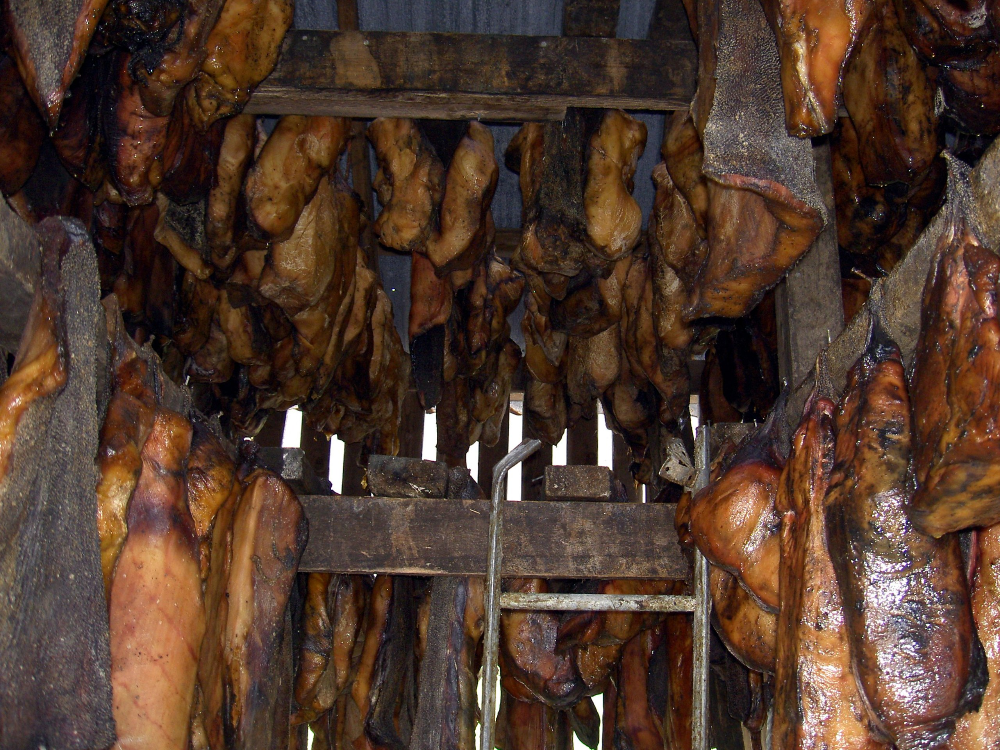

Hakarl

Description
A national dish of Iceland consisting of Greenland shark or other sleeper shark that has been cured with a particular fermentation process and hung to dry for four to five months. It has a strong ammonia-rich smell and fishy taste, making hakarl an acquired taste.
Ingredients
Steps
- Take one large shark, gut and discard the fins, tail, innards, the cartilage and the head. Cut flesh into large pieces and wash them in running water to get all slime and blood off.
- Dig a large hole in coarse gravel, preferably down by the sea and far from the nearest inhabited house - this is to make sure the smell doesn't bother anybody.Throw in the shark pieces and press them well together. It's best to do this when the weather is fairly warm (but not hot), as it hastens the curing process. Cover with more gravel and put heavy rocks on top to press down.
- Leave for 6-7 weeks (in summer) to 2-3 months (in winter).During this time, fluid will drain from the shark flesh, and putrefaction will set in.
- When the shark is soft and smells like ammonia, remove from the gravel, wash, and hang in a drying shack. This is a shed with plenty of holes to let the wind in, but enough shade to prevent the sun from shining directly on the shark. Let it hang until it is firm and fairly dry: 2-4 months. Warm, windy and dry weather will hasten the process, while cold, damp and still weather will delay it.
- Slice off the brown crust, cut the whitish flesh into small pieces and serve, preferably with a shot of ice-cold brennivín.